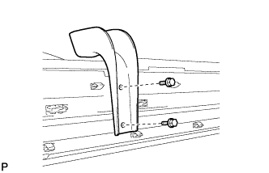
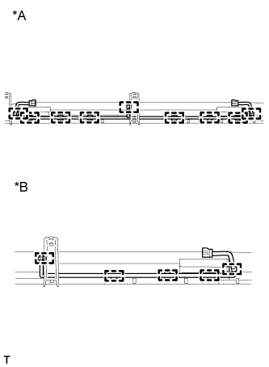

БОКОВОЙ ПОРОГ > РАЗБОРКА |
| 1. СНИМИТЕ КРОНШТЕЙН ЛЕВОГО ПОРОГА |
Выверните 2 болта и снимите кронштейн бокового порога.
| 2. СНИМИТЕ КРОНШТЕЙН ЛЕВОГО БОКОВОГО ПОРОГА № 2 |
Выверните 2 болта и снимите кронштейн порога № 2.
| 3. СНИМИТЕ КРОНШТЕЙН ЛЕВОГО БОКОВОГО ПОРОГА № 3 |
|  |
Выверните 2 болта и снимите кронштейн порога № 3.
| 4. СНИМИТЕ ЭЛЕМЕНТ ЗАЩИТЫ МОЛДИНГА ПОРОГА № 2 |
Выверните 2 болта и снимите защитный элемент молдинга порога кузова № 2.
| 5. СНИМИТЕ ПАНЕЛЬ ЛЕВОГО ПОРОГА (для 5-дверных моделей) |
Снимите фиксатор и выверните 3 болта.
Освободите 17 захватов и снимите панель порога.
| 6. СНИМИТЕ ПАНЕЛЬ ЛЕВОГО ПОРОГА (для 3-дверных моделей) |
Снимите фиксатор и выверните 3 болта.
Освободите 14 захватов и снимите панель порога.
| 7. СНИМИТЕ НАКЛАДКУ ПАНЕЛИ ЛЕВОГО ПОРОГА |
Снимите накладку панели порога.
| *A | Для 5-дверных моделей | *B | Для 3-дверных моделей |
| 8. СНИМИТЕ НАКЛАДКУ ПАНЕЛИ ПОРОГА № 2 |
Снимите накладку панели порога № 2.
| *A | Для 5-дверных моделей | *B | Для 3-дверных моделей |
| 9. СНИМИТЕ КРОНШТЕЙН ЛЕВОГО ПОРОГА В СБОРЕ |
Вставьте сверло диаметром 4 мм (0,157 дюйма) в дрель.
Обмотайте защитной лентой кончик сверла длиной примерно 5 мм (0,197 дюйма), как показано на рисунке.
Слегка надавливая дрелью на 3 заклепки, высверлите кромки 3 заклепок и снимите кронштейн порога.
С помощью пылесоса удалите все фрагменты заклепки и стружку из мест сверления.
| 10. СНИМИТЕ ЖГУТ ПРОВОДОВ ПАНЕЛИ ЛЕВОГО ПОРОГА (для моделей с подсветкой) |
|  |
Для 5-дверных моделей:
Освободите 9 зажимов и снимите жгут электропроводки.
Для 3-дверных моделей:
Освободите 5 зажимов и снимите жгут электропроводки.
| *A | Для 5-дверных моделей: |
| *B | Для 3-дверных моделей: |
| 11. СНИМИТЕ ЛАМПУ ОСВЕЩЕНИЯ ПОРОГА В СБОРЕ (для моделей с подсветкой) |
 |
Поверните патрон в направлении, указанном стрелкой, и снимите его.
Снимите лампу.
| 12. СНИМИТЕ КРОНШТЕЙН ЛАМПЫ ОСВЕЩЕНИЯ ПОРОГА (для моделей с подсветкой) |
Вставьте сверло диаметром 4 мм (0,157 дюйма) в дрель.
Обмотайте защитной лентой кончик сверла длиной примерно 5 мм (0,197 дюйма), как показано на рисунке.
Слегка надавливая дрелью на 3 заклепки, высверлите кромки 3 заклепок и снимите кронштейн лампы освещения порога.
С помощью пылесоса удалите все фрагменты заклепки и стружку из мест сверления.
| 13. СНИМИТЕ ЛАМПУ ОСВЕЩЕНИЯ ПОРОГА В СБОРЕ (для моделей с подсветкой) |
 |
Для 5-дверных моделей:
Выверните 4 болта и снимите 2 фонаря.
Для 3-дверных моделей:
Выверните 2 болта и снимите фонарь.